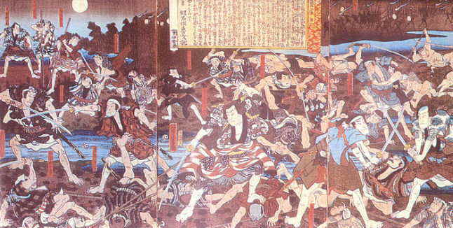

| 見たい項目をクリックして下さい | |||||||||
|
| 会員からの投稿（詳細-１７） |
| 江戸時代散策④ 関東の治安 |
|
|
■「八州廻り」とは
古文書講座で井上講師から、関東の農村の治安を守るのは八州廻りだった、という話が出ました。関東地方は幕領や旗本領・寺社領が多いうえ、小藩が多く、領地が入り組んでいます。しかも一つの村に領主が何人もいる相給（あいきゅう）の村が多く、警察力は弱かったのです。犯罪人や、渡世人が罪を犯しても、他領に逃げ込んでしまえば、取締側は手も足も出ません。そこが国持ちの大名などとは違います。たとえば加賀国や薩摩国で罪を犯したら、前田家や島津家の役人に国中追われ、とても逃げ切れるものではありません。
そこで幕府は、1805年に、関東地方の治安維持のために設けたのが八州廻り、これは通称で、正式には関東取締出役（でやく）といい勘定奉行所に所属しました。最初は８人、後に１０人、さらに１２人と増員しました。担当地域は関八州、つまり今の関東地方全域です。この広大な地域を、はじめは小者・中間（ちゅうげん）各１人を連れて、３人で組になって歩き回りました。後になると、人数も増えたようです。 幕領私領の区別なく歩き回り、治安の維持に努めるという建前でしたが、水戸家は幕府副将軍の権威を振りかざしてイヤな顔をするので、敬遠したということです。 ■「八州廻り」には腕自慢が多かった？ 時には一人で凶悪犯に立ち向かう、そんなイメージから、八州廻りには剣術自慢が多かった、と私は信じていました。佐藤雅美『八州廻り 桑山十兵衛』（注１）の主人公も、剣の達人です。ところが実際は、豪傑型より能吏型が普通でした。捕り物には、後に述べる道案内とその武力を使うことが多く、地域の村々を組織して犯罪者を追い詰める地味な組織力や、人心掌握術、江戸の勘定奉行所との手落ちの無い遣り取りなどが必要とされたからです。捕えた重罪犯は江戸送りとなり、お白州で糾問されます。 |
|
|
■相模は犯罪人が少なかった
『舊事諮問録』（くじしもんろく、注２）という記録によると、犯罪が少なかったのは房州・両総・相州、反対に多かったのは武州・上州・野州・常州だったそうです。そういえば大前田英五郎・国定忠治などの有名な侠客は、上州生まれです。江戸からやや離れ、絹織物などの産業が栄えたり、交通の要地として現金収入の多い地域に、博打をはじめ犯罪が多かったようです。 相模国には小田原藩があるくらいで、幕領や旗本領・寺社領が入り組んでいましたが、京大坂と結ぶ東海道が走る、当時の大動脈の地域でしたから、幕府は、品川と藤沢に代官所を置いて、睨みをきかせていました。そのため犯罪が少なかったのでしょう。街道筋に眼を光らせる四手（して）代官は、あとは日光街道の板橋、中山道の大宮に置かれただけですから、東海道筋の重視が、ひときわ目立ちます。 |
|  |
| 大利根河原の決闘 |
|
■二足の草鞋をはく
八州廻りは1814年に、120人あまりの博徒を逮捕しました。一組６人ぐらいのチームで、なぜこんな事が出来たのでしょうか。そのからくりは、土地の事情通の利用にありました。いわば毒をもって毒を制す、という方法です。利根川筋の大親分として、有名な飯岡の助五郎をご存知の方も多いでしょう。博徒の確執を描き、歌舞伎・浪花節にもなった「天保水滸伝」の登場人物の一人です。彼は博徒であると同時に、八州廻りの手先「道案内」を務め、「二足の草鞋（わらじ）」を履いていました。 道案内には親分衆ばかりでなく、名主を勤めるような有力農民もいました。そのあたりのことは、高橋敏『国定忠治』（岩波新書）に詳しく書かれています。 八州廻りは身分は低く、三人扶持（注３）、給金も１０〜２０両と低かったのですが、案外裕福だったといわれます。一年のほとんどを旅暮らし、その間の費用は給付されるので、俸給は手付かずで残ったそうです。また村々からの折にふれての礼金や、領主である大名旗本からの盆暮れの挨拶もあり、内証は豊だったそうです。 後には取り締まりの実をあげるため、地域の村々を二十か村から数十か村集めて「組合村」を作らせ、地域の治安や費用の分担をさせますが、その話はまたの機会に。 注１ 佐藤雅美『八州廻り 桑山十兵衛』の他に、八州廻りを扱 った文庫には、佐伯泰英『八州狩り』（光文社文庫）があり ますが、佐藤は『大君の通貨』で、的確な実証と分析で幕 末の混乱を描き、専門家の評価も高い。後者は、チャン バラあり、濡れ場ありの娯楽作。 注２ 『舊事諮問録』 幕末の幕府の役人から、幕府の制度や 職務の内容を、明治２０年代前半に聞き書きし、『史学会 雑誌』に連載した。（岩波文庫版白帯本で２冊） 注３ 一人扶持 米５合が与えられる。１年で約１石８斗、この ころは、１人の年間米消費量は1石と計算するから、三人 扶持では、5人強食べていける勘定。 |
| 投稿の一覧表 に戻る |